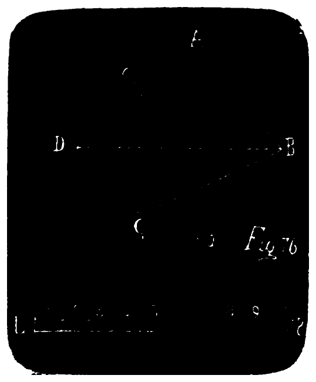
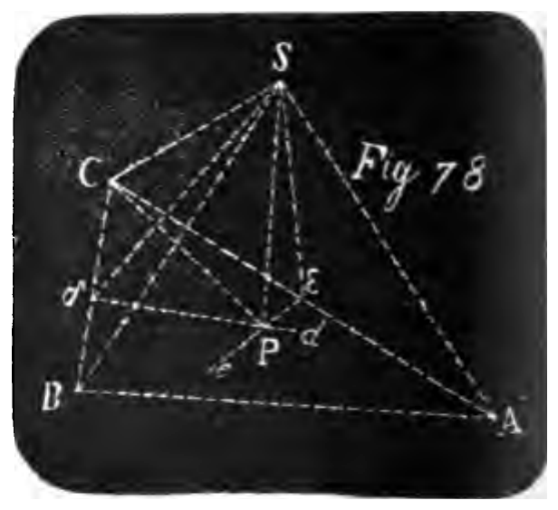

§§ 151–160: Compass Proofs of Trigonometric Identities¶
BOOK ELEVENTH — VARIOUS PROBLEMS
151. Problem. Given a scale \(LS\), to find the area of the triangular field \(ABD\), and of the quadrilateral field \(ABCD\) (fig. 76).
Solution. Make \(AB = Ba\), \(DA = Da\) (§ 11). Transfer onto scale \(LS\) the distances \(Aa\) and \(BD\) taken with the compass, and suppose them to be, for example, \(Aa = 7\), \(BD = 8\). Multiply these two numbers together, and take the fourth part of the product \(= 14\). This number will express the area of triangle \(ABD\).


If the area of the quadrilateral field \(ABCD\) is desired, having found point \(a\) as above, make \(BC = Bc\), \(DC = Dc\). Find on the scale the two distances \(Aa\), \(Cc\), and let them be, for example, \(Aa = 7\), \(Cc = 5\). By their sum \(= 12\) multiply \(BD\), found on the scale, for example \(= 8\). Of the product \(96\) take the fourth part \(24\). This number will express the area of quadrilateral \(ABCD\).
Demonstration. \(Aa\) is double the perpendicular falling from \(A\) onto \(BD\) (§ 14). But the area of triangle \(ABD\) equals half the area of a parallelogram having \(BD\) as base and this perpendicular as altitude (41, Book I). Hence it equals one-fourth the product of \(Aa\) into \(BD\). Likewise the area of triangle \(BCD\) equals one-fourth the product of \(Cc\) into \(BD\). Therefore the area of quadrilateral \(ABCD\) equals one-fourth the product of the sum of the two parallels \(Aa\), \(Cc\) into their perpendicular \(BD\).
152. This problem may serve to measure the area of an entire plan of a polygonal field, dividing it into so many quadrilaterals and triangles by imagining straight lines therein. Other ways of reducing it to trapezoids might also be proposed, yet these may easily be gathered, whenever useful, from the method by which this problem has been solved.
153. Problem. Given the triangular planes (fig. 77) bounding a tetrahedral pyramid, to find in its base the point where the perpendicular from the vertex falls, and to find its altitude.
Solution. Let triangle \(ABC\) be the base of this tetrahedral pyramid, and let \(AEC\), \(BDC\), \(AFB\) be the triangular planes meeting at its vertex.

With center \(C\) and radius \(CD = CE\), describe an arc passing through \(e\) and \(d\). With center \(B\) and radius \(BD\), describe an arc cutting the first at \(d\). With center \(A\) and radius \(AE\), mark an arc cutting the first at \(e\).
Find the point \(P\) where the two lines \(Dd\), \(Ee\) intersect (§ 11). This will be the point where the perpendicular from the vertex of the pyramid falls.
Bisect \(CE\) at \(m\) (§ 66). With radius \(mC\) and center \(m\), describe the semicircle \(CpE\). Make \(CP = Cp\). \(Ep\) will be the altitude of the pyramid.
Demonstration. If in pyramid \(SABC\) (fig. 78), which has triangle \(ABC\) for base and \(S\) for vertex, we draw in triangle \(SCB\) the line \(S\delta\) perpendicular to \(CB\), and in the plane of base \(ACB\) from point \(\delta\) erect the perpendicular \(\delta d\); point \(P\), where the perpendicular \(SP\) from the vertex falls, will lie in it (11, Book XI). Likewise, if from point \(S\) in plane \(SAC\) we draw \(S\varepsilon\) perpendicular to \(AC\), and from \(\varepsilon\) in the plane of base \(ACB\) we draw \(\varepsilon e\) perpendicular to the same \(AC\), point \(P\) will lie in it. Thus this point will be the intersection of the two lines \(\delta d\), \(\varepsilon e\). But in Figure 77, in which points \(D\) and \(E\) represent point \(S\) of Figure 78, \(Dd\) is perpendicular to \(BC\) at a point \(\delta\) (§ 14); so too \(Ee\) is perpendicular to \(AC\) at a point \(\varepsilon\). Therefore point \(P\) is the one sought.
Moreover, since the two triangles \(CPS\) (fig. 78), \(CpE\) (fig. 77) are right-angled at \(P\) and \(p\), the first by supposition and the second by 31, Book III, and since \(CS\) is the same as \(CE\) and \(CP = Cp\), we shall also have \(PS = pE\). For (Fig. 78) \((CS)^2 - (CP)^2 = (PS)^2\) (47, Book I). Equally (Fig. 77) \((CE)^2 - (Cp)^2 = (pE)^2\). But \((CS)^2 - (CP)^2 = (CE)^2 - (Cp)^2\). Therefore \((PS)^2 = (pE)^2\). Hence \(PS = pE\). Thus \(pE\) is the altitude of the pyramid.


154. Thus far in the Demonstrations we have not departed from the Elements of Euclid.
f. 0114 · p. 89But since hereafter this could not be done every time without excessive prolixity, we shall set down here as aids certain equations which are found demonstrated in all treatises on Plane Trigonometry.
155. If in a circle described with radius \(= 1\), let \(x\) and \(y\) be any two arcs; we shall have:
156. If in the third of these equations we put \(x = y\), we shall have:
And since \((\cos x)^2 + (\sin x)^2 = 1\), and hence \((\cos x)^2 = 1 - (\sin x)^2\), there will follow \(\cos 2x = 1 - 2(\sin x)^2\), and hence \((\sin x)^2 = \frac{1 - \cos 2x}{2}\), and finally \(\sin x = \sqrt{\frac{1 - \cos 2x}{2}}\).
157. If we add the first and second of the equations of § 155, there will follow
and hence
If we make \(x + y = p\), \(x - y = q\), we shall have \(2x = p + q\); hence \(\sin p + \sin q = 2\sin\frac{p + q}{2}\cos\frac{p - q}{2}\).
158. If we add the third and fourth of the equations of § 155, there will follow
and hence \(\cos p + \cos q = 2\cos\frac{p + q}{2}\cos\frac{p - q}{2}\).
159. If we subtract the third from the fourth of the aforesaid equations, there will follow
and hence \(\cos q - \cos p = 2\sin\frac{p + q}{2}\sin\frac{p - q}{2}\).
f. 0115 · p. 90160. Since \(2\sin x = \mathrm{chord}\,2x\), we shall have (§ 156) \(\mathrm{chord}\,2x = 2\sqrt{\frac{1 - \cos 2x}{2}}\); and putting \(x\) in place of \(2x\), we shall have
If \(k\) be called the chord, \(c\) the cosine, \(s\) the sine, \(h\) the chord of the complement to a quadrant, we shall have
From the first of these two equations we shall have \(c = 1 - \frac{1}{2}k^2\), and since \(s = \sqrt{1 - c^2} = \sqrt{k^2 - \frac{1}{4}k^4} = k\sqrt{1 - \frac{1}{4}k^2}\), we shall have \(h^2 = 2 - 2k\sqrt{1 - \frac{1}{4}k^2}\).